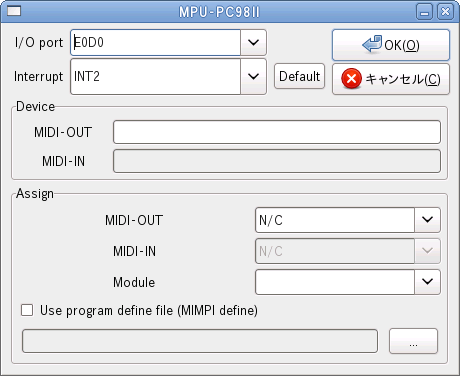

MPU-PC98II の I/O ポートを設定します。
MPU-PC98II の割り込み番号を設定します。
MPU-PC98II の設定を工場出荷状態に戻します。
MIDI-OUT デバイスファイルのパスを設定します。
MIDI-IN デバイスファイルのパスを設定します。
(現在使用できません。)
MIDI-OUT のデバイスを指定します。
| Device | 対応する MIDI-OUT デバイス |
|---|---|
| N/C | 未接続状態になります。 |
| MIDI-OUT device | MIDI-OUT device で指定した MIDI デバイスを使用します。 |
| VERMOUTH | MIDI 再生に Vermouth を使用します。 |
MIDI-IN のデバイスを指定します。
(現在使用できません。)
| Device | 対応する MIDI-IN デバイス |
|---|---|
| N/C | 未接続状態になります。 |
| MIDI-IN device | MIDI-IN device で指定した MIDI デバイスを使用します。 |
接続している MIDI 音源を指定します。
この指定はエミュレーションリセット、終了、MIDI Panic において MIDI 音源をリセットする為に使用されます。
MIMPI DEF ファイルを指定して、音色番号の振り替えを行ないます。
この機能により音色番号が異なる音源間で音色を合せる事ができます。